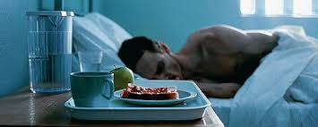
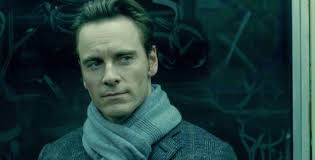
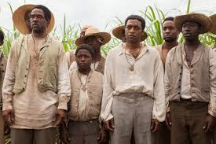

Steve McQueen is a British artist, director and screenwriter, best known for his films Hunger, Shame and 12 Years a Slave, which won the Academy Award for best picture.
Through the 1990s and 2000s, Steve McQueen garnered many awards for his art and film work. He enjoyed art, but noted in a 2009 interview with the Guardian, "I'm fed up with the art world, to be honest. It doesn't do much farther than its own tail, and it gets boring." McQueen pursued his passion for film, breaking into the mainstream industry with his 2008 film, Hunger. Starring Michael Fassbender and Liam McMahon, the film depicts the last months of the life of the IRA activist Bobby Sands.
McQueen's 2011 psychological sex film, Shame, again features Michael Fassbender, this time as a New York City executive suffering from a debilitating sex addiction. The Londoner, who now lives and works in Amsterdam, told the magazine he would like to return to the subject matter of male sexuality, which he explored in his film Shame. "That is unfinished business. I really want to come back to that," he said. The film earned McQueen the CinemAvvenire Award for emerging director.
McQueen went on to direct the film drama 12 Years a Slave, based on the true story of Solomon Northup, a black New Yorker born into freedom who was kidnapped in 1841, smuggled to Louisiana and sold to slaveowners. The film won the People's Choice award at the 2013 Toronto International Film Festival as well as the 2014 Academy Award for best picture.
  In 1996, McQueen left London for Amsterdame, where he settled with longtime partner Bianca Stigter. Together they are raising a daughter, Alex, and a son, Dexter. McQueen isn't the typical artist who lives in a studio. In fact, he doesn't even have one. In an interview with W Magazine, McQueen revealed that he has generated his best ideas when at home cooking or vacuuming. He doesn't hang out with other artists, stating "That's like if you're a butcher, hanging out with other butchers. You chop mean this way, and I chop mean that way. What's there to talk about?"
Director
October 9, 1969
Ealing, United Kingdom